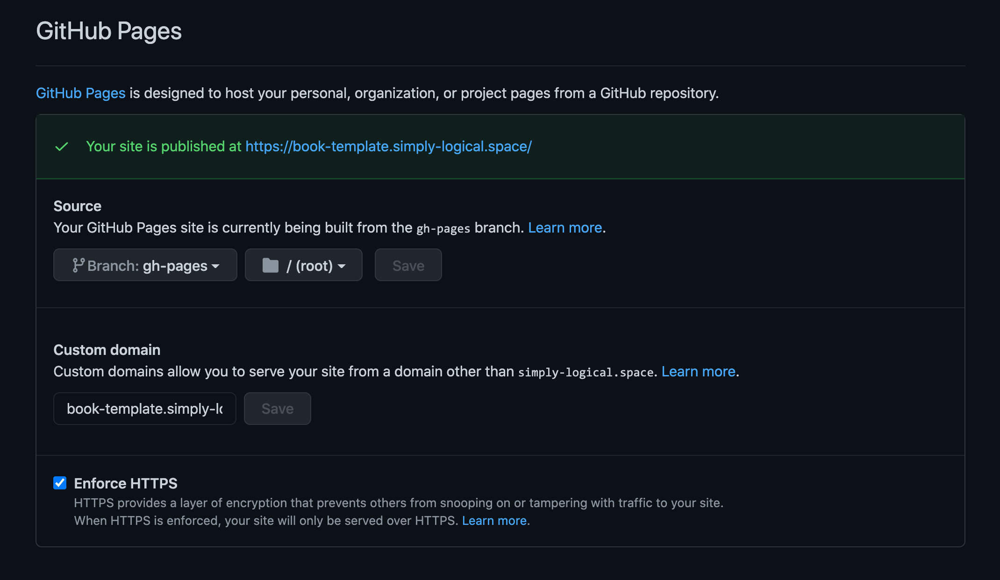

GitHub¶
GitHub is a great code repository and static website host; it makes developing and publishing Jupyter Books incredibly simple.
Source Code Hosting¶
The template for building interactive Prolog books is available in the
simply-logical/prolog-book-template GitHub repository (which is also the
source of this book/documentation).
You can either fork this repository, or download the source as a
ZIP archive and then push it to your own repository.
There are a few changes to the configuration files (CNAME, _config.yml and,
possibly, .github/workflows/build-and-deploy.yml) and the settings of your
repository that you need to make – they are described below and in the
Jupyter Book section.
GitHub Pages¶
A built book can either be deployed to a separate GitHub repository or placed in a designated branch of the same repository, used exclusively for serving your GitHub Page. The latter approach is more coherent and can be easily automated with a GitHub Action.
Deployment¶
This book template uses the latter approach; it is set up to automatically
deploy the book source taken from the latest commit to the master branch into
the gh-pages branch.
The script configuring this GitHub Action is included in the template
repository and is located in .github/workflows/build-and-deploy.yml.
It sets up Python, installs the dependencies (via requirements.txt) needed
to build the book, builds the book and deploys the HTML files to the
gh-pages branch.
These steps are performed for each new commit made to any branch,
with the exception of the deployment step, which is limited to commits made
to the master branch.
(More details about the dependencies and the process of building the book are
given in the Jupyter Book section.)
Note
The deployment step of the GitHub Action workflow is conditioned on the
presence of a master branch.
If you desire to deploy your book from a different branch, you need to amend
the
if: github.ref == 'refs/heads/master'
statement in the .github/workflows/build-and-deploy.yml file with
if: github.ref == 'refs/heads/your-branch-name'
If you prefer to deploy the book manually, delete the
.github/workflows/build-and-deploy.yml file from your repository.
Then, copy the content of the _build/html directory to your static webpage
hosting repository of choice.
Tip
See the gh-pages branch of the GitHub repository holding the source of
this book as a deployment example.
You may also be interested in the log of the GitHub Action responsible for
its automated deployment.
Setup¶
GitHub Pages use Jekyll as the default static page generator.
Since our book requires a custom build environment – Jupyter Book – Jekyll
must be disabled.
This is achieved by placing an empty file named .nojekyll at the
source location chosen for GitHub Pages deployment.
For this book, it is the root of the master branch in the
simply-logical/prolog-book-template repository.
When the book is built, this file is copied over to the build location
– _build/html – by Jupyter Book (see the Jupyter Book section for
more details), from where it is deployed to the gh-pages branch by our
GitHub Action.

The source location of the GitHub Pages deployment can be set to a specific branch, and customised even further by choosing a specific directory within this branch – see the GitHub Pages section in the Options tab in the Settings panel of your repository. It is also where you need to enable and configure your GitHub Page deployment in the first place.
See also
See GitHub Pages documentation for more details.
Note
Before you can choose the gh-pages branch to be your GitHub Pages deployment
source, this branch first needs to exist.
If you use the GitHub Actions script, this branch will be automatically created
when you push your book source to the master branch.
Custom Domain¶
GitHub Pages allow to use a custom domain with your website.
It can either be set through the Custom domain option in the repository
settings (see the figure above) or by placing a text file named CNAME
– holding your custom domain address – in the root of your repository.
You may also want to generate an SSL certificate for your domain to enable
HTTPS (again, see the figure above).
Warning
When deploying your book with GitHub Pages using our template make sure
to either remove the CNAME file or replace our domain address with yours
to prevent deployment conflicts.